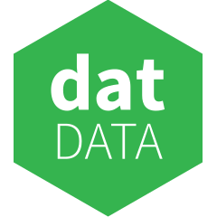

Collaborative P2P
@mafintosh

Protocol Lead
Denmark
About half the size of Taiwan
With half the population of Tokyo
Collaboration?? P2P??
Collaboration means connecting with friends and sharing data
... but using P2P
P2P === Can run anywhere
P2P === Do not trust specific servers
P2P === All data can be verified
1. P2P Networking
2. Append only logs
3. Hash Array Mapped Tries
1. P2P Networking
How do we connect to friends on the internet?
const net = require('net')
const socket = net.connect('best-friend.com')
Problem:
Hard to run servers
Problem:
We want encryption as well
Solution:
Every friend has a cryptographic key-pair
The friend's P2P "name" is their public key
They announce their public key and ip+port on a DHT
A DHT is like a global distributed database
Encryption is provided by NOISE, a modular SSL-like stack
npm install noise-network
const noise = require('noise-network')
// Make a cryptographic keypair
const keyPair = noise.keygen()
const server = noise.createServer(encryptedStream => {
console.log('new secure stream!')
})
// Announce ourself on the DHT
server.listen(keyPair)
console.log(`Listening on ${keyPair.publicKey.toString('hex')}`)
Our friends can find us using the public key
const noise = require('noise-network')
// stream is a encrypted stream to the server!
const stream = noise.connect('a-servers-public-key')
// totally private, only the server can see the 'hi'
stream.write('hi')
Does UDP hole punching, so works on your home network!
( demo time \o/ )
2. Append only logs
One of the most important P2P data structures for anything
Append Only Logs can be verified using Merkle Trees
Assume we trust /\
What if we want to get 5?
Someone just need to send us the "uncles"
To verify any piece of data we at most need log2(n) "uncles"
Very efficient!
Also means we can replicate "random access"
Only get the parts of the Append Only Log we want
Makes it very powerful to build data structures on top
npm install hypercore
const hypercore = require('hypercore')
// feed is an Append-Only-Log
const feed = hypercore('./the-data-is-stored-here')
feed.append('hello')
feed.get(0, (err, data) => console.log(data.toString()))
You can easily share hypercores using the noise-network
noise.createServer(encryptedStream => {
encryptedStream
.pipe(feed.replicate())
.pipe(encryptedStream)
})
( demo time \o/ )
3. Hash Array Mapped Tries
HAMTs are key-value stores!
A key-value store is a simple database
put(key, value)
get(key) -> value
They can be adapted to run on top of an Append-Only-Log
They work by hashing the key, and building a prefix trie based on that
insert(deadb),
insert(deada) ==> d
e
a
d
/ \
a b
Every put in a HAMT results in one
append
Every get only needs to look at log(n) entries
npm install hypertrie
HAMT built on top of hypercores
const hypertrie = require('hypertrie')
const db = hypertrie('./the-db-is-stored-here')
db.put('hello', 'world', (err) => {
db.get('hello', (err, node) => {
console.log('hello', node.value.toString())
})
})
HAMTs are really fast and scale very well.
As a test we have a P2P node running indexing all of NPM into one.
npm install -g ims
P2P npm clone
Uses hypertries to find modules through other peers.
( demo time \o/ )
npm install noise-network
npm install hypercore
npm install hypertrie
npm install -g ims
Thank you!